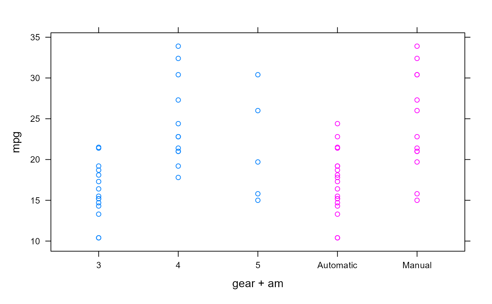
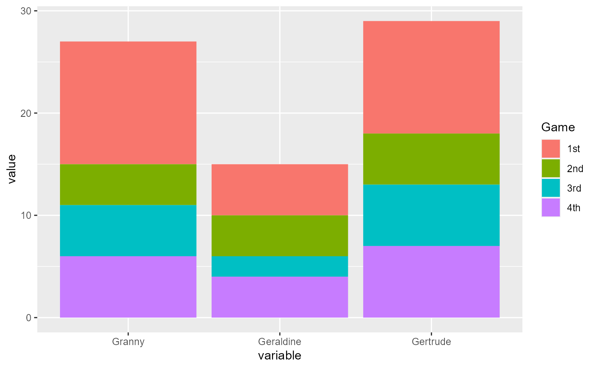

ch13.RdTo print a listing of all examples of a chapter, use ch13().
To run all the examples of ch13(), use example(ch13).
ch13()
Other Chapters: ch01, ch02,
ch03, ch04,
ch05, ch06,
ch07, ch08,
ch09, ch10,
ch11, ch12,
ch14, ch15,
ch16, ch17,
ch18, ch19,
ch20
# C hapter 13 - Manipulating and Processing Data # Deciding on the Most Appropriate Data Structure # Creating Subsets of Your Data ## Understanding the three subset operators ## Understanding the five ways of specifying the subset str(islands)#> Named num [1:48] 11506 5500 16988 2968 16 ... #> - attr(*, "names")= chr [1:48] "Africa" "Antarctica" "Asia" "Australia" ...islands[]#> Africa Antarctica Asia Australia #> 11506 5500 16988 2968 #> Axel Heiberg Baffin Banks Borneo #> 16 184 23 280 #> Britain Celebes Celon Cuba #> 84 73 25 43 #> Devon Ellesmere Europe Greenland #> 21 82 3745 840 #> Hainan Hispaniola Hokkaido Honshu #> 13 30 30 89 #> Iceland Ireland Java Kyushu #> 40 33 49 14 #> Luzon Madagascar Melville Mindanao #> 42 227 16 36 #> Moluccas New Britain New Guinea New Zealand (N) #> 29 15 306 44 #> New Zealand (S) Newfoundland North America Novaya Zemlya #> 58 43 9390 32 #> Prince of Wales Sakhalin South America Southampton #> 13 29 6795 16 #> Spitsbergen Sumatra Taiwan Tasmania #> 15 183 14 26 #> Tierra del Fuego Timor Vancouver Victoria #> 19 13 12 82#> Borneo Africa Africa Sumatra #> 280 11506 11506 183islands[-(3:46)]#> Africa Antarctica Vancouver Victoria #> 11506 5500 12 82islands[islands < 20]#> Axel Heiberg Hainan Kyushu Melville #> 16 13 14 16 #> New Britain Prince of Wales Southampton Spitsbergen #> 15 13 16 15 #> Taiwan Tierra del Fuego Timor Vancouver #> 14 19 13 12#> Madagascar Cuba #> 227 43#> 'data.frame': 150 obs. of 5 variables: #> $ Sepal.Length: num 5.1 4.9 4.7 4.6 5 5.4 4.6 5 4.4 4.9 ... #> $ Sepal.Width : num 3.5 3 3.2 3.1 3.6 3.9 3.4 3.4 2.9 3.1 ... #> $ Petal.Length: num 1.4 1.4 1.3 1.5 1.4 1.7 1.4 1.5 1.4 1.5 ... #> $ Petal.Width : num 0.2 0.2 0.2 0.2 0.2 0.4 0.3 0.2 0.2 0.1 ... #> $ Species : Factor w/ 3 levels "setosa","versicolor",..: 1 1 1 1 1 1 1 1 1 1 ...iris[1:5, ]#> Sepal.Length Sepal.Width Petal.Length Petal.Width Species #> 1 5.1 3.5 1.4 0.2 setosa #> 2 4.9 3.0 1.4 0.2 setosa #> 3 4.7 3.2 1.3 0.2 setosa #> 4 4.6 3.1 1.5 0.2 setosa #> 5 5.0 3.6 1.4 0.2 setosa#> Sepal.Length Sepal.Width #> 1 5.1 3.5 #> 2 4.9 3.0 #> 3 4.7 3.2 #> 4 4.6 3.1 #> 5 5.0 3.6 #> 6 5.4 3.9 #> 7 4.6 3.4 #> 8 5.0 3.4 #> 9 4.4 2.9 #> 10 4.9 3.1 #> 11 5.4 3.7 #> 12 4.8 3.4 #> 13 4.8 3.0 #> 14 4.3 3.0 #> 15 5.8 4.0 #> 16 5.7 4.4 #> 17 5.4 3.9 #> 18 5.1 3.5 #> 19 5.7 3.8 #> 20 5.1 3.8 #> 21 5.4 3.4 #> 22 5.1 3.7 #> 23 4.6 3.6 #> 24 5.1 3.3 #> 25 4.8 3.4 #> 26 5.0 3.0 #> 27 5.0 3.4 #> 28 5.2 3.5 #> 29 5.2 3.4 #> 30 4.7 3.2 #> 31 4.8 3.1 #> 32 5.4 3.4 #> 33 5.2 4.1 #> 34 5.5 4.2 #> 35 4.9 3.1 #> 36 5.0 3.2 #> 37 5.5 3.5 #> 38 4.9 3.6 #> 39 4.4 3.0 #> 40 5.1 3.4 #> 41 5.0 3.5 #> 42 4.5 2.3 #> 43 4.4 3.2 #> 44 5.0 3.5 #> 45 5.1 3.8 #> 46 4.8 3.0 #> 47 5.1 3.8 #> 48 4.6 3.2 #> 49 5.3 3.7 #> 50 5.0 3.3 #> 51 7.0 3.2 #> 52 6.4 3.2 #> 53 6.9 3.1 #> 54 5.5 2.3 #> 55 6.5 2.8 #> 56 5.7 2.8 #> 57 6.3 3.3 #> 58 4.9 2.4 #> 59 6.6 2.9 #> 60 5.2 2.7 #> 61 5.0 2.0 #> 62 5.9 3.0 #> 63 6.0 2.2 #> 64 6.1 2.9 #> 65 5.6 2.9 #> 66 6.7 3.1 #> 67 5.6 3.0 #> 68 5.8 2.7 #> 69 6.2 2.2 #> 70 5.6 2.5 #> 71 5.9 3.2 #> 72 6.1 2.8 #> 73 6.3 2.5 #> 74 6.1 2.8 #> 75 6.4 2.9 #> 76 6.6 3.0 #> 77 6.8 2.8 #> 78 6.7 3.0 #> 79 6.0 2.9 #> 80 5.7 2.6 #> 81 5.5 2.4 #> 82 5.5 2.4 #> 83 5.8 2.7 #> 84 6.0 2.7 #> 85 5.4 3.0 #> 86 6.0 3.4 #> 87 6.7 3.1 #> 88 6.3 2.3 #> 89 5.6 3.0 #> 90 5.5 2.5 #> 91 5.5 2.6 #> 92 6.1 3.0 #> 93 5.8 2.6 #> 94 5.0 2.3 #> 95 5.6 2.7 #> 96 5.7 3.0 #> 97 5.7 2.9 #> 98 6.2 2.9 #> 99 5.1 2.5 #> 100 5.7 2.8 #> 101 6.3 3.3 #> 102 5.8 2.7 #> 103 7.1 3.0 #> 104 6.3 2.9 #> 105 6.5 3.0 #> 106 7.6 3.0 #> 107 4.9 2.5 #> 108 7.3 2.9 #> 109 6.7 2.5 #> 110 7.2 3.6 #> 111 6.5 3.2 #> 112 6.4 2.7 #> 113 6.8 3.0 #> 114 5.7 2.5 #> 115 5.8 2.8 #> 116 6.4 3.2 #> 117 6.5 3.0 #> 118 7.7 3.8 #> 119 7.7 2.6 #> 120 6.0 2.2 #> 121 6.9 3.2 #> 122 5.6 2.8 #> 123 7.7 2.8 #> 124 6.3 2.7 #> 125 6.7 3.3 #> 126 7.2 3.2 #> 127 6.2 2.8 #> 128 6.1 3.0 #> 129 6.4 2.8 #> 130 7.2 3.0 #> 131 7.4 2.8 #> 132 7.9 3.8 #> 133 6.4 2.8 #> 134 6.3 2.8 #> 135 6.1 2.6 #> 136 7.7 3.0 #> 137 6.3 3.4 #> 138 6.4 3.1 #> 139 6.0 3.0 #> 140 6.9 3.1 #> 141 6.7 3.1 #> 142 6.9 3.1 #> 143 5.8 2.7 #> 144 6.8 3.2 #> 145 6.7 3.3 #> 146 6.7 3.0 #> 147 6.3 2.5 #> 148 6.5 3.0 #> 149 6.2 3.4 #> 150 5.9 3.0iris[, 'Sepal.Length']#> [1] 5.1 4.9 4.7 4.6 5.0 5.4 4.6 5.0 4.4 4.9 5.4 4.8 4.8 4.3 5.8 5.7 5.4 5.1 #> [19] 5.7 5.1 5.4 5.1 4.6 5.1 4.8 5.0 5.0 5.2 5.2 4.7 4.8 5.4 5.2 5.5 4.9 5.0 #> [37] 5.5 4.9 4.4 5.1 5.0 4.5 4.4 5.0 5.1 4.8 5.1 4.6 5.3 5.0 7.0 6.4 6.9 5.5 #> [55] 6.5 5.7 6.3 4.9 6.6 5.2 5.0 5.9 6.0 6.1 5.6 6.7 5.6 5.8 6.2 5.6 5.9 6.1 #> [73] 6.3 6.1 6.4 6.6 6.8 6.7 6.0 5.7 5.5 5.5 5.8 6.0 5.4 6.0 6.7 6.3 5.6 5.5 #> [91] 5.5 6.1 5.8 5.0 5.6 5.7 5.7 6.2 5.1 5.7 6.3 5.8 7.1 6.3 6.5 7.6 4.9 7.3 #> [109] 6.7 7.2 6.5 6.4 6.8 5.7 5.8 6.4 6.5 7.7 7.7 6.0 6.9 5.6 7.7 6.3 6.7 7.2 #> [127] 6.2 6.1 6.4 7.2 7.4 7.9 6.4 6.3 6.1 7.7 6.3 6.4 6.0 6.9 6.7 6.9 5.8 6.8 #> [145] 6.7 6.7 6.3 6.5 6.2 5.9iris[, 'Sepal.Length', drop=FALSE]#> Sepal.Length #> 1 5.1 #> 2 4.9 #> 3 4.7 #> 4 4.6 #> 5 5.0 #> 6 5.4 #> 7 4.6 #> 8 5.0 #> 9 4.4 #> 10 4.9 #> 11 5.4 #> 12 4.8 #> 13 4.8 #> 14 4.3 #> 15 5.8 #> 16 5.7 #> 17 5.4 #> 18 5.1 #> 19 5.7 #> 20 5.1 #> 21 5.4 #> 22 5.1 #> 23 4.6 #> 24 5.1 #> 25 4.8 #> 26 5.0 #> 27 5.0 #> 28 5.2 #> 29 5.2 #> 30 4.7 #> 31 4.8 #> 32 5.4 #> 33 5.2 #> 34 5.5 #> 35 4.9 #> 36 5.0 #> 37 5.5 #> 38 4.9 #> 39 4.4 #> 40 5.1 #> 41 5.0 #> 42 4.5 #> 43 4.4 #> 44 5.0 #> 45 5.1 #> 46 4.8 #> 47 5.1 #> 48 4.6 #> 49 5.3 #> 50 5.0 #> 51 7.0 #> 52 6.4 #> 53 6.9 #> 54 5.5 #> 55 6.5 #> 56 5.7 #> 57 6.3 #> 58 4.9 #> 59 6.6 #> 60 5.2 #> 61 5.0 #> 62 5.9 #> 63 6.0 #> 64 6.1 #> 65 5.6 #> 66 6.7 #> 67 5.6 #> 68 5.8 #> 69 6.2 #> 70 5.6 #> 71 5.9 #> 72 6.1 #> 73 6.3 #> 74 6.1 #> 75 6.4 #> 76 6.6 #> 77 6.8 #> 78 6.7 #> 79 6.0 #> 80 5.7 #> 81 5.5 #> 82 5.5 #> 83 5.8 #> 84 6.0 #> 85 5.4 #> 86 6.0 #> 87 6.7 #> 88 6.3 #> 89 5.6 #> 90 5.5 #> 91 5.5 #> 92 6.1 #> 93 5.8 #> 94 5.0 #> 95 5.6 #> 96 5.7 #> 97 5.7 #> 98 6.2 #> 99 5.1 #> 100 5.7 #> 101 6.3 #> 102 5.8 #> 103 7.1 #> 104 6.3 #> 105 6.5 #> 106 7.6 #> 107 4.9 #> 108 7.3 #> 109 6.7 #> 110 7.2 #> 111 6.5 #> 112 6.4 #> 113 6.8 #> 114 5.7 #> 115 5.8 #> 116 6.4 #> 117 6.5 #> 118 7.7 #> 119 7.7 #> 120 6.0 #> 121 6.9 #> 122 5.6 #> 123 7.7 #> 124 6.3 #> 125 6.7 #> 126 7.2 #> 127 6.2 #> 128 6.1 #> 129 6.4 #> 130 7.2 #> 131 7.4 #> 132 7.9 #> 133 6.4 #> 134 6.3 #> 135 6.1 #> 136 7.7 #> 137 6.3 #> 138 6.4 #> 139 6.0 #> 140 6.9 #> 141 6.7 #> 142 6.9 #> 143 5.8 #> 144 6.8 #> 145 6.7 #> 146 6.7 #> 147 6.3 #> 148 6.5 #> 149 6.2 #> 150 5.9iris['Sepal.Length']#> Sepal.Length #> 1 5.1 #> 2 4.9 #> 3 4.7 #> 4 4.6 #> 5 5.0 #> 6 5.4 #> 7 4.6 #> 8 5.0 #> 9 4.4 #> 10 4.9 #> 11 5.4 #> 12 4.8 #> 13 4.8 #> 14 4.3 #> 15 5.8 #> 16 5.7 #> 17 5.4 #> 18 5.1 #> 19 5.7 #> 20 5.1 #> 21 5.4 #> 22 5.1 #> 23 4.6 #> 24 5.1 #> 25 4.8 #> 26 5.0 #> 27 5.0 #> 28 5.2 #> 29 5.2 #> 30 4.7 #> 31 4.8 #> 32 5.4 #> 33 5.2 #> 34 5.5 #> 35 4.9 #> 36 5.0 #> 37 5.5 #> 38 4.9 #> 39 4.4 #> 40 5.1 #> 41 5.0 #> 42 4.5 #> 43 4.4 #> 44 5.0 #> 45 5.1 #> 46 4.8 #> 47 5.1 #> 48 4.6 #> 49 5.3 #> 50 5.0 #> 51 7.0 #> 52 6.4 #> 53 6.9 #> 54 5.5 #> 55 6.5 #> 56 5.7 #> 57 6.3 #> 58 4.9 #> 59 6.6 #> 60 5.2 #> 61 5.0 #> 62 5.9 #> 63 6.0 #> 64 6.1 #> 65 5.6 #> 66 6.7 #> 67 5.6 #> 68 5.8 #> 69 6.2 #> 70 5.6 #> 71 5.9 #> 72 6.1 #> 73 6.3 #> 74 6.1 #> 75 6.4 #> 76 6.6 #> 77 6.8 #> 78 6.7 #> 79 6.0 #> 80 5.7 #> 81 5.5 #> 82 5.5 #> 83 5.8 #> 84 6.0 #> 85 5.4 #> 86 6.0 #> 87 6.7 #> 88 6.3 #> 89 5.6 #> 90 5.5 #> 91 5.5 #> 92 6.1 #> 93 5.8 #> 94 5.0 #> 95 5.6 #> 96 5.7 #> 97 5.7 #> 98 6.2 #> 99 5.1 #> 100 5.7 #> 101 6.3 #> 102 5.8 #> 103 7.1 #> 104 6.3 #> 105 6.5 #> 106 7.6 #> 107 4.9 #> 108 7.3 #> 109 6.7 #> 110 7.2 #> 111 6.5 #> 112 6.4 #> 113 6.8 #> 114 5.7 #> 115 5.8 #> 116 6.4 #> 117 6.5 #> 118 7.7 #> 119 7.7 #> 120 6.0 #> 121 6.9 #> 122 5.6 #> 123 7.7 #> 124 6.3 #> 125 6.7 #> 126 7.2 #> 127 6.2 #> 128 6.1 #> 129 6.4 #> 130 7.2 #> 131 7.4 #> 132 7.9 #> 133 6.4 #> 134 6.3 #> 135 6.1 #> 136 7.7 #> 137 6.3 #> 138 6.4 #> 139 6.0 #> 140 6.9 #> 141 6.7 #> 142 6.9 #> 143 5.8 #> 144 6.8 #> 145 6.7 #> 146 6.7 #> 147 6.3 #> 148 6.5 #> 149 6.2 #> 150 5.9#> Sepal.Length Sepal.Width #> 1 5.1 3.5 #> 2 4.9 3.0 #> 3 4.7 3.2 #> 4 4.6 3.1 #> 5 5.0 3.6#> [1] 3 5 6 2 3 6 6 1 3 4#> [1] 2 3 4 6 2 6 6 4 4 1#> [1] 2 2 5 3 5 3 5 6 3 5#> [1] 2 3 4 6 2 6 6 4 4 1#> [1] 44 118 61 130 138iris[index, ]#> Sepal.Length Sepal.Width Petal.Length Petal.Width Species #> 44 5.0 3.5 1.6 0.6 setosa #> 118 7.7 3.8 6.7 2.2 virginica #> 61 5.0 2.0 3.5 1.0 versicolor #> 130 7.2 3.0 5.8 1.6 virginica #> 138 6.4 3.1 5.5 1.8 virginica#> [1] FALSE FALSE TRUE FALSE TRUE FALSEduplicated(iris)#> [1] FALSE FALSE FALSE FALSE FALSE FALSE FALSE FALSE FALSE FALSE FALSE FALSE #> [13] FALSE FALSE FALSE FALSE FALSE FALSE FALSE FALSE FALSE FALSE FALSE FALSE #> [25] FALSE FALSE FALSE FALSE FALSE FALSE FALSE FALSE FALSE FALSE FALSE FALSE #> [37] FALSE FALSE FALSE FALSE FALSE FALSE FALSE FALSE FALSE FALSE FALSE FALSE #> [49] FALSE FALSE FALSE FALSE FALSE FALSE FALSE FALSE FALSE FALSE FALSE FALSE #> [61] FALSE FALSE FALSE FALSE FALSE FALSE FALSE FALSE FALSE FALSE FALSE FALSE #> [73] FALSE FALSE FALSE FALSE FALSE FALSE FALSE FALSE FALSE FALSE FALSE FALSE #> [85] FALSE FALSE FALSE FALSE FALSE FALSE FALSE FALSE FALSE FALSE FALSE FALSE #> [97] FALSE FALSE FALSE FALSE FALSE FALSE FALSE FALSE FALSE FALSE FALSE FALSE #> [109] FALSE FALSE FALSE FALSE FALSE FALSE FALSE FALSE FALSE FALSE FALSE FALSE #> [121] FALSE FALSE FALSE FALSE FALSE FALSE FALSE FALSE FALSE FALSE FALSE FALSE #> [133] FALSE FALSE FALSE FALSE FALSE FALSE FALSE FALSE FALSE FALSE TRUE FALSE #> [145] FALSE FALSE FALSE FALSE FALSE FALSE#> [1] 143#> Sepal.Length Sepal.Width Petal.Length Petal.Width Species #> 1 5.1 3.5 1.4 0.2 setosa #> 2 4.9 3.0 1.4 0.2 setosa #> 3 4.7 3.2 1.3 0.2 setosa #> 4 4.6 3.1 1.5 0.2 setosa #> 5 5.0 3.6 1.4 0.2 setosa #> 6 5.4 3.9 1.7 0.4 setosa #> 7 4.6 3.4 1.4 0.3 setosa #> 8 5.0 3.4 1.5 0.2 setosa #> 9 4.4 2.9 1.4 0.2 setosa #> 10 4.9 3.1 1.5 0.1 setosa #> 11 5.4 3.7 1.5 0.2 setosa #> 12 4.8 3.4 1.6 0.2 setosa #> 13 4.8 3.0 1.4 0.1 setosa #> 14 4.3 3.0 1.1 0.1 setosa #> 15 5.8 4.0 1.2 0.2 setosa #> 16 5.7 4.4 1.5 0.4 setosa #> 17 5.4 3.9 1.3 0.4 setosa #> 18 5.1 3.5 1.4 0.3 setosa #> 19 5.7 3.8 1.7 0.3 setosa #> 20 5.1 3.8 1.5 0.3 setosa #> 21 5.4 3.4 1.7 0.2 setosa #> 22 5.1 3.7 1.5 0.4 setosa #> 23 4.6 3.6 1.0 0.2 setosa #> 24 5.1 3.3 1.7 0.5 setosa #> 25 4.8 3.4 1.9 0.2 setosa #> 26 5.0 3.0 1.6 0.2 setosa #> 27 5.0 3.4 1.6 0.4 setosa #> 28 5.2 3.5 1.5 0.2 setosa #> 29 5.2 3.4 1.4 0.2 setosa #> 30 4.7 3.2 1.6 0.2 setosa #> 31 4.8 3.1 1.6 0.2 setosa #> 32 5.4 3.4 1.5 0.4 setosa #> 33 5.2 4.1 1.5 0.1 setosa #> 34 5.5 4.2 1.4 0.2 setosa #> 35 4.9 3.1 1.5 0.2 setosa #> 36 5.0 3.2 1.2 0.2 setosa #> 37 5.5 3.5 1.3 0.2 setosa #> 38 4.9 3.6 1.4 0.1 setosa #> 39 4.4 3.0 1.3 0.2 setosa #> 40 5.1 3.4 1.5 0.2 setosa #> 41 5.0 3.5 1.3 0.3 setosa #> 42 4.5 2.3 1.3 0.3 setosa #> 43 4.4 3.2 1.3 0.2 setosa #> 44 5.0 3.5 1.6 0.6 setosa #> 45 5.1 3.8 1.9 0.4 setosa #> 46 4.8 3.0 1.4 0.3 setosa #> 47 5.1 3.8 1.6 0.2 setosa #> 48 4.6 3.2 1.4 0.2 setosa #> 49 5.3 3.7 1.5 0.2 setosa #> 50 5.0 3.3 1.4 0.2 setosa #> 51 7.0 3.2 4.7 1.4 versicolor #> 52 6.4 3.2 4.5 1.5 versicolor #> 53 6.9 3.1 4.9 1.5 versicolor #> 54 5.5 2.3 4.0 1.3 versicolor #> 55 6.5 2.8 4.6 1.5 versicolor #> 56 5.7 2.8 4.5 1.3 versicolor #> 57 6.3 3.3 4.7 1.6 versicolor #> 58 4.9 2.4 3.3 1.0 versicolor #> 59 6.6 2.9 4.6 1.3 versicolor #> 60 5.2 2.7 3.9 1.4 versicolor #> 61 5.0 2.0 3.5 1.0 versicolor #> 62 5.9 3.0 4.2 1.5 versicolor #> 63 6.0 2.2 4.0 1.0 versicolor #> 64 6.1 2.9 4.7 1.4 versicolor #> 65 5.6 2.9 3.6 1.3 versicolor #> 66 6.7 3.1 4.4 1.4 versicolor #> 67 5.6 3.0 4.5 1.5 versicolor #> 68 5.8 2.7 4.1 1.0 versicolor #> 69 6.2 2.2 4.5 1.5 versicolor #> 70 5.6 2.5 3.9 1.1 versicolor #> 71 5.9 3.2 4.8 1.8 versicolor #> 72 6.1 2.8 4.0 1.3 versicolor #> 73 6.3 2.5 4.9 1.5 versicolor #> 74 6.1 2.8 4.7 1.2 versicolor #> 75 6.4 2.9 4.3 1.3 versicolor #> 76 6.6 3.0 4.4 1.4 versicolor #> 77 6.8 2.8 4.8 1.4 versicolor #> 78 6.7 3.0 5.0 1.7 versicolor #> 79 6.0 2.9 4.5 1.5 versicolor #> 80 5.7 2.6 3.5 1.0 versicolor #> 81 5.5 2.4 3.8 1.1 versicolor #> 82 5.5 2.4 3.7 1.0 versicolor #> 83 5.8 2.7 3.9 1.2 versicolor #> 84 6.0 2.7 5.1 1.6 versicolor #> 85 5.4 3.0 4.5 1.5 versicolor #> 86 6.0 3.4 4.5 1.6 versicolor #> 87 6.7 3.1 4.7 1.5 versicolor #> 88 6.3 2.3 4.4 1.3 versicolor #> 89 5.6 3.0 4.1 1.3 versicolor #> 90 5.5 2.5 4.0 1.3 versicolor #> 91 5.5 2.6 4.4 1.2 versicolor #> 92 6.1 3.0 4.6 1.4 versicolor #> 93 5.8 2.6 4.0 1.2 versicolor #> 94 5.0 2.3 3.3 1.0 versicolor #> 95 5.6 2.7 4.2 1.3 versicolor #> 96 5.7 3.0 4.2 1.2 versicolor #> 97 5.7 2.9 4.2 1.3 versicolor #> 98 6.2 2.9 4.3 1.3 versicolor #> 99 5.1 2.5 3.0 1.1 versicolor #> 100 5.7 2.8 4.1 1.3 versicolor #> 101 6.3 3.3 6.0 2.5 virginica #> 102 5.8 2.7 5.1 1.9 virginica #> 103 7.1 3.0 5.9 2.1 virginica #> 104 6.3 2.9 5.6 1.8 virginica #> 105 6.5 3.0 5.8 2.2 virginica #> 106 7.6 3.0 6.6 2.1 virginica #> 107 4.9 2.5 4.5 1.7 virginica #> 108 7.3 2.9 6.3 1.8 virginica #> 109 6.7 2.5 5.8 1.8 virginica #> 110 7.2 3.6 6.1 2.5 virginica #> 111 6.5 3.2 5.1 2.0 virginica #> 112 6.4 2.7 5.3 1.9 virginica #> 113 6.8 3.0 5.5 2.1 virginica #> 114 5.7 2.5 5.0 2.0 virginica #> 115 5.8 2.8 5.1 2.4 virginica #> 116 6.4 3.2 5.3 2.3 virginica #> 117 6.5 3.0 5.5 1.8 virginica #> 118 7.7 3.8 6.7 2.2 virginica #> 119 7.7 2.6 6.9 2.3 virginica #> 120 6.0 2.2 5.0 1.5 virginica #> 121 6.9 3.2 5.7 2.3 virginica #> 122 5.6 2.8 4.9 2.0 virginica #> 123 7.7 2.8 6.7 2.0 virginica #> 124 6.3 2.7 4.9 1.8 virginica #> 125 6.7 3.3 5.7 2.1 virginica #> 126 7.2 3.2 6.0 1.8 virginica #> 127 6.2 2.8 4.8 1.8 virginica #> 128 6.1 3.0 4.9 1.8 virginica #> 129 6.4 2.8 5.6 2.1 virginica #> 130 7.2 3.0 5.8 1.6 virginica #> 131 7.4 2.8 6.1 1.9 virginica #> 132 7.9 3.8 6.4 2.0 virginica #> 133 6.4 2.8 5.6 2.2 virginica #> 134 6.3 2.8 5.1 1.5 virginica #> 135 6.1 2.6 5.6 1.4 virginica #> 136 7.7 3.0 6.1 2.3 virginica #> 137 6.3 3.4 5.6 2.4 virginica #> 138 6.4 3.1 5.5 1.8 virginica #> 139 6.0 3.0 4.8 1.8 virginica #> 140 6.9 3.1 5.4 2.1 virginica #> 141 6.7 3.1 5.6 2.4 virginica #> 142 6.9 3.1 5.1 2.3 virginica #> 144 6.8 3.2 5.9 2.3 virginica #> 145 6.7 3.3 5.7 2.5 virginica #> 146 6.7 3.0 5.2 2.3 virginica #> 147 6.3 2.5 5.0 1.9 virginica #> 148 6.5 3.0 5.2 2.0 virginica #> 149 6.2 3.4 5.4 2.3 virginica #> 150 5.9 3.0 5.1 1.8 virginica#> Sepal.Length Sepal.Width Petal.Length Petal.Width Species #> 1 5.1 3.5 1.4 0.2 setosa #> 2 4.9 3.0 1.4 0.2 setosa #> 3 4.7 3.2 1.3 0.2 setosa #> 4 4.6 3.1 1.5 0.2 setosa #> 5 5.0 3.6 1.4 0.2 setosa #> 6 5.4 3.9 1.7 0.4 setosa #> 7 4.6 3.4 1.4 0.3 setosa #> 8 5.0 3.4 1.5 0.2 setosa #> 9 4.4 2.9 1.4 0.2 setosa #> 10 4.9 3.1 1.5 0.1 setosa #> 11 5.4 3.7 1.5 0.2 setosa #> 12 4.8 3.4 1.6 0.2 setosa #> 13 4.8 3.0 1.4 0.1 setosa #> 14 4.3 3.0 1.1 0.1 setosa #> 15 5.8 4.0 1.2 0.2 setosa #> 16 5.7 4.4 1.5 0.4 setosa #> 17 5.4 3.9 1.3 0.4 setosa #> 18 5.1 3.5 1.4 0.3 setosa #> 19 5.7 3.8 1.7 0.3 setosa #> 20 5.1 3.8 1.5 0.3 setosa #> 21 5.4 3.4 1.7 0.2 setosa #> 22 5.1 3.7 1.5 0.4 setosa #> 23 4.6 3.6 1.0 0.2 setosa #> 24 5.1 3.3 1.7 0.5 setosa #> 25 4.8 3.4 1.9 0.2 setosa #> 26 5.0 3.0 1.6 0.2 setosa #> 27 5.0 3.4 1.6 0.4 setosa #> 28 5.2 3.5 1.5 0.2 setosa #> 29 5.2 3.4 1.4 0.2 setosa #> 30 4.7 3.2 1.6 0.2 setosa #> 31 4.8 3.1 1.6 0.2 setosa #> 32 5.4 3.4 1.5 0.4 setosa #> 33 5.2 4.1 1.5 0.1 setosa #> 34 5.5 4.2 1.4 0.2 setosa #> 35 4.9 3.1 1.5 0.2 setosa #> 36 5.0 3.2 1.2 0.2 setosa #> 37 5.5 3.5 1.3 0.2 setosa #> 38 4.9 3.6 1.4 0.1 setosa #> 39 4.4 3.0 1.3 0.2 setosa #> 40 5.1 3.4 1.5 0.2 setosa #> 41 5.0 3.5 1.3 0.3 setosa #> 42 4.5 2.3 1.3 0.3 setosa #> 43 4.4 3.2 1.3 0.2 setosa #> 44 5.0 3.5 1.6 0.6 setosa #> 45 5.1 3.8 1.9 0.4 setosa #> 46 4.8 3.0 1.4 0.3 setosa #> 47 5.1 3.8 1.6 0.2 setosa #> 48 4.6 3.2 1.4 0.2 setosa #> 49 5.3 3.7 1.5 0.2 setosa #> 50 5.0 3.3 1.4 0.2 setosa #> 51 7.0 3.2 4.7 1.4 versicolor #> 52 6.4 3.2 4.5 1.5 versicolor #> 53 6.9 3.1 4.9 1.5 versicolor #> 54 5.5 2.3 4.0 1.3 versicolor #> 55 6.5 2.8 4.6 1.5 versicolor #> 56 5.7 2.8 4.5 1.3 versicolor #> 57 6.3 3.3 4.7 1.6 versicolor #> 58 4.9 2.4 3.3 1.0 versicolor #> 59 6.6 2.9 4.6 1.3 versicolor #> 60 5.2 2.7 3.9 1.4 versicolor #> 61 5.0 2.0 3.5 1.0 versicolor #> 62 5.9 3.0 4.2 1.5 versicolor #> 63 6.0 2.2 4.0 1.0 versicolor #> 64 6.1 2.9 4.7 1.4 versicolor #> 65 5.6 2.9 3.6 1.3 versicolor #> 66 6.7 3.1 4.4 1.4 versicolor #> 67 5.6 3.0 4.5 1.5 versicolor #> 68 5.8 2.7 4.1 1.0 versicolor #> 69 6.2 2.2 4.5 1.5 versicolor #> 70 5.6 2.5 3.9 1.1 versicolor #> 71 5.9 3.2 4.8 1.8 versicolor #> 72 6.1 2.8 4.0 1.3 versicolor #> 73 6.3 2.5 4.9 1.5 versicolor #> 74 6.1 2.8 4.7 1.2 versicolor #> 75 6.4 2.9 4.3 1.3 versicolor #> 76 6.6 3.0 4.4 1.4 versicolor #> 77 6.8 2.8 4.8 1.4 versicolor #> 78 6.7 3.0 5.0 1.7 versicolor #> 79 6.0 2.9 4.5 1.5 versicolor #> 80 5.7 2.6 3.5 1.0 versicolor #> 81 5.5 2.4 3.8 1.1 versicolor #> 82 5.5 2.4 3.7 1.0 versicolor #> 83 5.8 2.7 3.9 1.2 versicolor #> 84 6.0 2.7 5.1 1.6 versicolor #> 85 5.4 3.0 4.5 1.5 versicolor #> 86 6.0 3.4 4.5 1.6 versicolor #> 87 6.7 3.1 4.7 1.5 versicolor #> 88 6.3 2.3 4.4 1.3 versicolor #> 89 5.6 3.0 4.1 1.3 versicolor #> 90 5.5 2.5 4.0 1.3 versicolor #> 91 5.5 2.6 4.4 1.2 versicolor #> 92 6.1 3.0 4.6 1.4 versicolor #> 93 5.8 2.6 4.0 1.2 versicolor #> 94 5.0 2.3 3.3 1.0 versicolor #> 95 5.6 2.7 4.2 1.3 versicolor #> 96 5.7 3.0 4.2 1.2 versicolor #> 97 5.7 2.9 4.2 1.3 versicolor #> 98 6.2 2.9 4.3 1.3 versicolor #> 99 5.1 2.5 3.0 1.1 versicolor #> 100 5.7 2.8 4.1 1.3 versicolor #> 101 6.3 3.3 6.0 2.5 virginica #> 102 5.8 2.7 5.1 1.9 virginica #> 103 7.1 3.0 5.9 2.1 virginica #> 104 6.3 2.9 5.6 1.8 virginica #> 105 6.5 3.0 5.8 2.2 virginica #> 106 7.6 3.0 6.6 2.1 virginica #> 107 4.9 2.5 4.5 1.7 virginica #> 108 7.3 2.9 6.3 1.8 virginica #> 109 6.7 2.5 5.8 1.8 virginica #> 110 7.2 3.6 6.1 2.5 virginica #> 111 6.5 3.2 5.1 2.0 virginica #> 112 6.4 2.7 5.3 1.9 virginica #> 113 6.8 3.0 5.5 2.1 virginica #> 114 5.7 2.5 5.0 2.0 virginica #> 115 5.8 2.8 5.1 2.4 virginica #> 116 6.4 3.2 5.3 2.3 virginica #> 117 6.5 3.0 5.5 1.8 virginica #> 118 7.7 3.8 6.7 2.2 virginica #> 119 7.7 2.6 6.9 2.3 virginica #> 120 6.0 2.2 5.0 1.5 virginica #> 121 6.9 3.2 5.7 2.3 virginica #> 122 5.6 2.8 4.9 2.0 virginica #> 123 7.7 2.8 6.7 2.0 virginica #> 124 6.3 2.7 4.9 1.8 virginica #> 125 6.7 3.3 5.7 2.1 virginica #> 126 7.2 3.2 6.0 1.8 virginica #> 127 6.2 2.8 4.8 1.8 virginica #> 128 6.1 3.0 4.9 1.8 virginica #> 129 6.4 2.8 5.6 2.1 virginica #> 130 7.2 3.0 5.8 1.6 virginica #> 131 7.4 2.8 6.1 1.9 virginica #> 132 7.9 3.8 6.4 2.0 virginica #> 133 6.4 2.8 5.6 2.2 virginica #> 134 6.3 2.8 5.1 1.5 virginica #> 135 6.1 2.6 5.6 1.4 virginica #> 136 7.7 3.0 6.1 2.3 virginica #> 137 6.3 3.4 5.6 2.4 virginica #> 138 6.4 3.1 5.5 1.8 virginica #> 139 6.0 3.0 4.8 1.8 virginica #> 140 6.9 3.1 5.4 2.1 virginica #> 141 6.7 3.1 5.6 2.4 virginica #> 142 6.9 3.1 5.1 2.3 virginica #> 144 6.8 3.2 5.9 2.3 virginica #> 145 6.7 3.3 5.7 2.5 virginica #> 146 6.7 3.0 5.2 2.3 virginica #> 147 6.3 2.5 5.0 1.9 virginica #> 148 6.5 3.0 5.2 2.0 virginica #> 149 6.2 3.4 5.4 2.3 virginica #> 150 5.9 3.0 5.1 1.8 virginica#> 'data.frame': 153 obs. of 6 variables: #> $ Ozone : int 41 36 12 18 NA 28 23 19 8 NA ... #> $ Solar.R: int 190 118 149 313 NA NA 299 99 19 194 ... #> $ Wind : num 7.4 8 12.6 11.5 14.3 14.9 8.6 13.8 20.1 8.6 ... #> $ Temp : int 67 72 74 62 56 66 65 59 61 69 ... #> $ Month : int 5 5 5 5 5 5 5 5 5 5 ... #> $ Day : int 1 2 3 4 5 6 7 8 9 10 ...complete.cases(airquality)#> [1] TRUE TRUE TRUE TRUE FALSE FALSE TRUE TRUE TRUE FALSE FALSE TRUE #> [13] TRUE TRUE TRUE TRUE TRUE TRUE TRUE TRUE TRUE TRUE TRUE TRUE #> [25] FALSE FALSE FALSE TRUE TRUE TRUE TRUE FALSE FALSE FALSE FALSE FALSE #> [37] FALSE TRUE FALSE TRUE TRUE FALSE FALSE TRUE FALSE FALSE TRUE TRUE #> [49] TRUE TRUE TRUE FALSE FALSE FALSE FALSE FALSE FALSE FALSE FALSE FALSE #> [61] FALSE TRUE TRUE TRUE FALSE TRUE TRUE TRUE TRUE TRUE TRUE FALSE #> [73] TRUE TRUE FALSE TRUE TRUE TRUE TRUE TRUE TRUE TRUE FALSE FALSE #> [85] TRUE TRUE TRUE TRUE TRUE TRUE TRUE TRUE TRUE TRUE TRUE FALSE #> [97] FALSE FALSE TRUE TRUE TRUE FALSE FALSE TRUE TRUE TRUE FALSE TRUE #> [109] TRUE TRUE TRUE TRUE TRUE TRUE FALSE TRUE TRUE TRUE FALSE TRUE #> [121] TRUE TRUE TRUE TRUE TRUE TRUE TRUE TRUE TRUE TRUE TRUE TRUE #> [133] TRUE TRUE TRUE TRUE TRUE TRUE TRUE TRUE TRUE TRUE TRUE TRUE #> [145] TRUE TRUE TRUE TRUE TRUE FALSE TRUE TRUE TRUE#> 'data.frame': 111 obs. of 6 variables: #> $ Ozone : int 41 36 12 18 23 19 8 16 11 14 ... #> $ Solar.R: int 190 118 149 313 299 99 19 256 290 274 ... #> $ Wind : num 7.4 8 12.6 11.5 8.6 13.8 20.1 9.7 9.2 10.9 ... #> $ Temp : int 67 72 74 62 65 59 61 69 66 68 ... #> $ Month : int 5 5 5 5 5 5 5 5 5 5 ... #> $ Day : int 1 2 3 4 7 8 9 12 13 14 ...x <- na.omit(airquality) # Adding Calculated Fields to Data ## Doing arithmetic on columns of a data frame x <- iris$Sepal.Length / iris$Sepal.Width head(x)#> [1] 1.457143 1.633333 1.468750 1.483871 1.388889 1.384615## Using with and within to improve code readability y <- with(iris, Sepal.Length / Sepal.Width) head(y)#> [1] 1.457143 1.633333 1.468750 1.483871 1.388889 1.384615#> [1] TRUEiris$ratio <- iris$Sepal.Length / iris$Sepal.Width iris <- within(iris, ratio <- Sepal.Length / Sepal.Width) head(iris$ratio)#> [1] 1.457143 1.633333 1.468750 1.483871 1.388889 1.384615## Creating subgroups or bins of data ### Using cut to create a fixed number of subgroups head(state.x77)#> Population Income Illiteracy Life Exp Murder HS Grad Frost Area #> Alabama 3615 3624 2.1 69.05 15.1 41.3 20 50708 #> Alaska 365 6315 1.5 69.31 11.3 66.7 152 566432 #> Arizona 2212 4530 1.8 70.55 7.8 58.1 15 113417 #> Arkansas 2110 3378 1.9 70.66 10.1 39.9 65 51945 #> California 21198 5114 1.1 71.71 10.3 62.6 20 156361 #> Colorado 2541 4884 0.7 72.06 6.8 63.9 166 103766#> Alabama Alaska Arizona Arkansas California #> 20 152 15 65 20#> [1] [-0.188,62.7] (125,188] [-0.188,62.7] (62.7,125] [-0.188,62.7] #> [6] (125,188] (125,188] (62.7,125] [-0.188,62.7] [-0.188,62.7] #> [11] [-0.188,62.7] (125,188] (125,188] (62.7,125] (125,188] #> [16] (62.7,125] (62.7,125] [-0.188,62.7] (125,188] (62.7,125] #> [21] (62.7,125] (62.7,125] (125,188] [-0.188,62.7] (62.7,125] #> [26] (125,188] (125,188] (125,188] (125,188] (62.7,125] #> [31] (62.7,125] (62.7,125] (62.7,125] (125,188] (62.7,125] #> [36] (62.7,125] [-0.188,62.7] (125,188] (125,188] (62.7,125] #> [41] (125,188] (62.7,125] [-0.188,62.7] (125,188] (125,188] #> [46] (62.7,125] [-0.188,62.7] (62.7,125] (125,188] (125,188] #> Levels: [-0.188,62.7] (62.7,125] (125,188]#> [1] Low High Low Med Low High High Med Low Low Low High High Med High #> [16] Med Med Low High Med Med Med High Low Med High High High High Med #> [31] Med Med Med High Med Med Low High High Med High Med Low High High #> [46] Med Low Med High High #> Levels: Low Med High### Using table to count the number of observations x <- cut(frost, 3, include.lowest=TRUE, labels=c("Low", "Med", "High")) table(x)#> x #> Low Med High #> 11 19 20x#> [1] Low High Low Med Low High High Med Low Low Low High High Med High #> [16] Med Med Low High Med Med Med High Low Med High High High High Med #> [31] Med Med Med High Med Med Low High High Med High Med Low High High #> [46] Med Low Med High High #> Levels: Low Med High# Combining and Merging Data Sets ## Creating sample data to illustrate merging all.states <- as.data.frame(state.x77) all.states$Name <- rownames(state.x77) rownames(all.states) <- NULL str(all.states)#> 'data.frame': 50 obs. of 9 variables: #> $ Population: num 3615 365 2212 2110 21198 ... #> $ Income : num 3624 6315 4530 3378 5114 ... #> $ Illiteracy: num 2.1 1.5 1.8 1.9 1.1 0.7 1.1 0.9 1.3 2 ... #> $ Life Exp : num 69 69.3 70.5 70.7 71.7 ... #> $ Murder : num 15.1 11.3 7.8 10.1 10.3 6.8 3.1 6.2 10.7 13.9 ... #> $ HS Grad : num 41.3 66.7 58.1 39.9 62.6 63.9 56 54.6 52.6 40.6 ... #> $ Frost : num 20 152 15 65 20 166 139 103 11 60 ... #> $ Area : num 50708 566432 113417 51945 156361 ... #> $ Name : chr "Alabama" "Alaska" "Arizona" "Arkansas" ...### Creating a subset of cold states cold.states <- all.states[all.states$Frost>150, c("Name", "Frost")] cold.states#> Name Frost #> 2 Alaska 152 #> 6 Colorado 166 #> 19 Maine 161 #> 23 Minnesota 160 #> 26 Montana 155 #> 28 Nevada 188 #> 29 New Hampshire 174 #> 34 North Dakota 186 #> 41 South Dakota 172 #> 45 Vermont 168 #> 50 Wyoming 173### Creating a subset of large states large.states <- all.states[all.states$Area>=100000, c("Name", "Area")] large.states#> Name Area #> 2 Alaska 566432 #> 3 Arizona 113417 #> 5 California 156361 #> 6 Colorado 103766 #> 26 Montana 145587 #> 28 Nevada 109889 #> 31 New Mexico 121412 #> 43 Texas 262134## Using the merge() function ### Using merge to find the intersection of data merge(cold.states, large.states)#> Name Frost Area #> 1 Alaska 152 566432 #> 2 Colorado 166 103766 #> 3 Montana 155 145587 #> 4 Nevada 188 109889#> Name Frost Area #> 1 Alaska 152 566432 #> 2 Arizona NA 113417 #> 3 California NA 156361 #> 4 Colorado 166 103766 #> 5 Maine 161 NA #> 6 Minnesota 160 NA #> 7 Montana 155 145587 #> 8 Nevada 188 109889 #> 9 New Hampshire 174 NA #> 10 New Mexico NA 121412 #> 11 North Dakota 186 NA #> 12 South Dakota 172 NA #> 13 Texas NA 262134 #> 14 Vermont 168 NA #> 15 Wyoming 173 NA## Working with lookup tables ### Finding a match index <- match(cold.states$Name, large.states$Name) index#> [1] 1 4 NA NA 5 6 NA NA NA NA NA#> Name Area #> 2 Alaska 566432 #> 6 Colorado 103766 #> 26 Montana 145587 #> 28 Nevada 109889### Making sense of %in% index <- cold.states$Name %in% large.states$Name index#> [1] TRUE TRUE FALSE FALSE TRUE TRUE FALSE FALSE FALSE FALSE FALSE#> [1] TRUE TRUE FALSE FALSE TRUE TRUE FALSE FALSE FALSE FALSE FALSEcold.states[index, ]#> Name Frost #> 2 Alaska 152 #> 6 Colorado 166 #> 26 Montana 155 #> 28 Nevada 188# Sorting and Ordering Data some.states <- data.frame( Region = state.region, state.x77) some.states <- some.states[1:10, 1:3] some.states#> Region Population Income #> Alabama South 3615 3624 #> Alaska West 365 6315 #> Arizona West 2212 4530 #> Arkansas South 2110 3378 #> California West 21198 5114 #> Colorado West 2541 4884 #> Connecticut Northeast 3100 5348 #> Delaware South 579 4809 #> Florida South 8277 4815 #> Georgia South 4931 4091#> [1] 365 579 2110 2212 2541 3100 3615 4931 8277 21198#> [1] 21198 8277 4931 3615 3100 2541 2212 2110 579 365#> [1] 2 8 4 3 6 7 1 10 9 5some.states$Population[order.pop]#> [1] 365 579 2110 2212 2541 3100 3615 4931 8277 21198## Sorting a data frame in ascending order some.states[order.pop, ]#> Region Population Income #> Alaska West 365 6315 #> Delaware South 579 4809 #> Arkansas South 2110 3378 #> Arizona West 2212 4530 #> Colorado West 2541 4884 #> Connecticut Northeast 3100 5348 #> Alabama South 3615 3624 #> Georgia South 4931 4091 #> Florida South 8277 4815 #> California West 21198 5114#> [1] 2 8 4 3 6 7 1 10 9 5#> [1] 5 9 10 1 7 6 3 4 8 2#> Region Population Income #> California West 21198 5114 #> Florida South 8277 4815 #> Georgia South 4931 4091 #> Alabama South 3615 3624 #> Connecticut Northeast 3100 5348 #> Colorado West 2541 4884 #> Arizona West 2212 4530 #> Arkansas South 2110 3378 #> Delaware South 579 4809 #> Alaska West 365 6315### Sorting on more than one column index <- with(some.states, order(Region, Population)) some.states[index, ]#> Region Population Income #> Connecticut Northeast 3100 5348 #> Delaware South 579 4809 #> Arkansas South 2110 3378 #> Alabama South 3615 3624 #> Georgia South 4931 4091 #> Florida South 8277 4815 #> Alaska West 365 6315 #> Arizona West 2212 4530 #> Colorado West 2541 4884 #> California West 21198 5114### Sorting multiple columns in mixed order index <- order(-xtfrm(some.states$Region), some.states$Population) some.states[index, ]#> Region Population Income #> Alaska West 365 6315 #> Arizona West 2212 4530 #> Colorado West 2541 4884 #> California West 21198 5114 #> Delaware South 579 4809 #> Arkansas South 2110 3378 #> Alabama South 3615 3624 #> Georgia South 4931 4091 #> Florida South 8277 4815 #> Connecticut Northeast 3100 5348# Traversing Your Data with the Apply Functions ## Using the apply() function to summarize arrays str(Titanic)#> 'table' num [1:4, 1:2, 1:2, 1:2] 0 0 35 0 0 0 17 0 118 154 ... #> - attr(*, "dimnames")=List of 4 #> ..$ Class : chr [1:4] "1st" "2nd" "3rd" "Crew" #> ..$ Sex : chr [1:2] "Male" "Female" #> ..$ Age : chr [1:2] "Child" "Adult" #> ..$ Survived: chr [1:2] "No" "Yes"#> 1st 2nd 3rd Crew #> 325 285 706 885#> Child Adult #> 109 2092#> Survived #> Age No Yes #> Child 52 57 #> Adult 1438 654#> $Sepal.Length #> [1] "numeric" #> #> $Sepal.Width #> [1] "numeric" #> #> $Petal.Length #> [1] "numeric" #> #> $Petal.Width #> [1] "numeric" #> #> $Species #> [1] "factor" #> #> $ratio #> [1] "numeric" #>#> Sepal.Length Sepal.Width Petal.Length Petal.Width Species ratio #> "numeric" "numeric" "numeric" "numeric" "factor" "numeric"#> Warning: argument is not numeric or logical: returning NA#> Sepal.Length Sepal.Width Petal.Length Petal.Width Species ratio #> 5.843333 3.057333 3.758000 1.199333 NA 1.953681#> Sepal.Length Sepal.Width Petal.Length Petal.Width Species ratio #> 5.843333 3.057333 3.758000 1.199333 NA 1.953681#> setosa versicolor virginica #> 5.006 5.936 6.588#> setosa versicolor virginica #> 5.006 5.936 6.588#> 'data.frame': 32 obs. of 11 variables: #> $ mpg : num 21 21 22.8 21.4 18.7 18.1 14.3 24.4 22.8 19.2 ... #> $ cyl : num 6 6 4 6 8 6 8 4 4 6 ... #> $ disp: num 160 160 108 258 360 ... #> $ hp : num 110 110 93 110 175 105 245 62 95 123 ... #> $ drat: num 3.9 3.9 3.85 3.08 3.15 2.76 3.21 3.69 3.92 3.92 ... #> $ wt : num 2.62 2.88 2.32 3.21 3.44 ... #> $ qsec: num 16.5 17 18.6 19.4 17 ... #> $ vs : num 0 0 1 1 0 1 0 1 1 1 ... #> $ am : num 1 1 1 0 0 0 0 0 0 0 ... #> $ gear: num 4 4 4 3 3 3 3 4 4 4 ... #> $ carb: num 4 4 1 1 2 1 4 2 2 4 ...cars <- within(mtcars, am <- factor(am, levels=0:1, labels=c("Automatic", "Manual")) ) with(cars, tapply(mpg, am, mean))#> Automatic Manual #> 17.14737 24.39231#> Automatic Manual #> 3 16.10667 NA #> 4 21.05000 26.275 #> 5 NA 21.380#> gear am x #> 1 3 Automatic 16.10667 #> 2 4 Automatic 21.05000 #> 3 4 Manual 26.27500 #> 4 5 Manual 21.38000#> gear am mpg #> 1 3 Automatic 16.10667 #> 2 4 Automatic 21.05000 #> 3 4 Manual 26.27500 #> 4 5 Manual 21.38000#> Call: #> aov(formula = mpg ~ gear + am, data = cars) #> #> Terms: #> gear am Residuals #> Sum of Squares 259.7492 145.4497 720.8483 #> Deg. of Freedom 1 1 29 #> #> Residual standard error: 4.985663 #> Estimated effects may be unbalanced# Whipping Your Data into Shape ## Understanding data in long and wide format ## Getting started with the reshape2 package# NOT RUN { install.packages("reshape2") # }library("reshape2") goals <- data.frame( Game = c("1st", "2nd", "3rd", "4th"), Venue = c("Bruges", "Ghent", "Ghent", "Bruges"), Granny = c(12, 4, 5, 6), Geraldine = c(5, 4, 2, 4), Gertrude = c(11, 5, 6, 7) ) ## Melting data to long format mgoals <- melt(goals)#>#> Game Venue variable value #> 1 1st Bruges Granny 12 #> 2 2nd Ghent Granny 4 #> 3 3rd Ghent Granny 5 #> 4 4th Bruges Granny 6 #> 5 1st Bruges Geraldine 5 #> 6 2nd Ghent Geraldine 4 #> 7 3rd Ghent Geraldine 2 #> 8 4th Bruges Geraldine 4 #> 9 1st Bruges Gertrude 11 #> 10 2nd Ghent Gertrude 5 #> 11 3rd Ghent Gertrude 6 #> 12 4th Bruges Gertrude 7#> Venue Game Granny Geraldine Gertrude #> 1 Bruges 1st 12 5 11 #> 2 Bruges 4th 6 4 7 #> 3 Ghent 2nd 4 4 5 #> 4 Ghent 3rd 5 2 6#> variable Bruges Ghent #> 1 Granny 18 9 #> 2 Geraldine 9 6 #> 3 Gertrude 18 11#> Venue Granny Geraldine Gertrude #> 1 Bruges 18 9 18 #> 2 Ghent 9 6 11#> Venue variable 1st 2nd 3rd 4th #> 1 Bruges Granny 12 0 0 6 #> 2 Bruges Geraldine 5 0 0 4 #> 3 Bruges Gertrude 11 0 0 7 #> 4 Ghent Granny 0 4 5 0 #> 5 Ghent Geraldine 0 4 2 0 #> 6 Ghent Gertrude 0 5 6 0